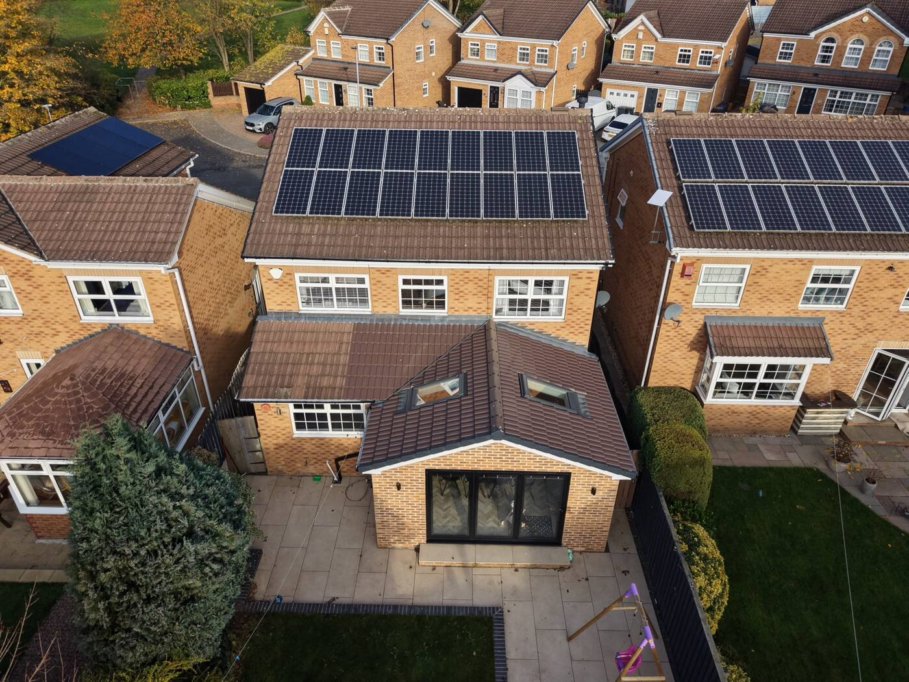

Open-Plan Kitchen, Dining & Family Extension

About the project
Designed for effortless everyday living and entertaining, this spacious single-storey rear extension transforms the heart of the home into a bright, sociable hub.
Built in matching buff brick with a pitched tiled roof and dual roof lanterns, the exterior blends naturally with the existing property while opening directly onto a generous stone patio. Inside, an open-plan layout connects a sleek navy shaker kitchen with a dedicated dining zone and relaxed seating area. A central island with a white worktop, induction hob, wine cooler, and breakfast seating anchors the kitchen, while black bi-fold doors and overhead skylights flood the space with natural daylight. Finished with herringbone flooring, recessed downlights, and vertical column radiators, the extension balances classic character with modern practicality.